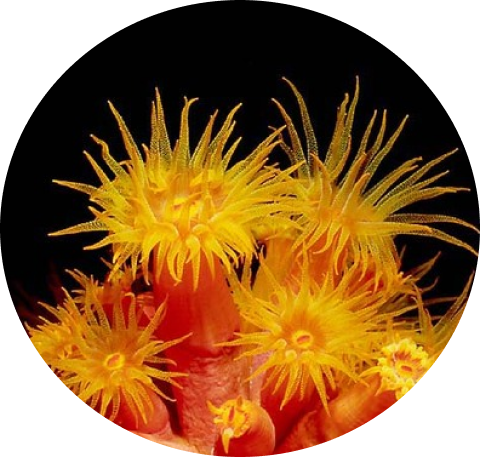

Características
Gerais
O habitat principal dos cnidários é o ambiente marinho de águas tropicais rasas. Poucas espécies vivem em água doce. Nenhum é terrestre.
Os cnidários apresentam um tipo específico de célula em seus tentáculos, o cnidócito. Essas células lançam o nematocisto, uma espécie de cápsula que contém um filamento com espinhos e um líquido urticante.
O nematocisto é responsável por injetar substâncias tóxicas que auxiliam na captura de presa e na defesa. Em humanos, pode causar queimaduras.
Os cnidários apresentam dois tipos morfológicos, as medusas e os pólipos. Algumas espécies podem apresentar as duas formas em diferentes períodos da vida.
As medusas são representadas pelos organismos natantes, como as águas-vivas. Apresentam um corpo gelatinoso em forma de sino, com tentáculos em sua margem e a boca central.
Os pólipos constituem os organismos sésseis, ou seja, fixos a um substrato. Apresentam formato tubular, como as anêmonas-do-mar. Eles podem viver em colônias ou isolados.
Os cnidários não apresentam sistema circulatório, digestório e respiratório.

Alimentação
Os cnidários apresentam sistema digestório incompleto, eles não apresentam ânus.
O sistema digestivo dos cnidários é constituído por uma cavidade dotada de uma única abertura. Esse local serve tanto para a entrada de alimentos como para a saída de dejetos.
Ao capturarem o alimento, com auxílio dos tentáculos, o introduzem na cavidade digestiva. Daí, são parcialmente fracionados por ação das enzimas, sendo os nutrientes distribuídos por todas as partes do corpo.O animal só volta a se alimentar depois de eliminar os dejetos.
Os cnidários são carnívoros. Alimentam-se de partículas em suspensão na água e pequenos animais aquáticos.
Respiração
Os cnidários não possuem sistema respiratório. As trocas gasosas ocorrem diretamente entre cada célula e o meio, através de difusão.
Sistema Nervoso
Os cnidários são os primeiros animais a apresentar neurônios, as células nervosas. Porém, o seu sistema nervoso é bastante simples. É caracterizado por ser do tipo difuso, as células nervosas formam uma rede que fica em contato direto com as células sensorias e contráteis.
Reprodução
Os cnidários podem apresentar reprodução assexuada e sexuada.
A reprodução assexuada ocorre por brotamento. Na superfície do corpo existem brotos que ao se desenvolverem, desprendem-se e originam novos indivíduos. Esse tipo de reprodução é comum em hidras de água doce e em algumas anêmonas marinhas.
A reprodução sexuada é possível graças a existência de cnidários dióicos (sexos separados) ou monóicos (hermafroditas).
Nesse tipo de reprodução, há formação de gametas masculinos e femininos. O macho libera seus espermatozóides na água, os quais fecundam o óvulo feminino, presente na superfície corporal.
Porém, o mais comum é os gametas se encontrarem na água, ocorrendo a fecundação externa. O zigoto se desenvolve e não existe fase larval.
Alguns cnidários podem apresentar alternância de gerações. Eles apresentam uma fase de pólipo, em que apresentam reprodução assexuada e outra fase de medusa, com reprodução sexuada.



A classe Anthozoa é a com o maior número de espécies. Neste grupo só existem pólipos marinhos. O principal representante do grupo é a anêmona-do-mar, um animal cilíndrico, cuja base é fixa em algum substrato. Na extremidade oposta fica a boca, rodeada por tentáculos flexíveis.
Os corais também pertencem a essa classe. Eles são colônias de pólipos que podem conter até 100 mil indivíduos. Por isso, os corais são caracterizados pela elevada biodiversidade.
As hidras habitualmente permanecem imóveis, podendo ser confundida com a vegetação, principalmente pela cor esverdeada de seu corpo, a qual se deve pela presença de algas verdes unicelulares no seu interior.
Movimentando seus tentáculos, capturam suas presas, entre elas a pulga d’água. As poucas espécies de água doce pertencem a classe hydrozoa.
A água-viva tem um aspecto de um prato invertido, com a boca em posição inferior e as bordas dotadas de muitos tentáculos.
Apresenta de 2 a 40 cm de diâmetro e as mais variadas cores. É móvel e possui o corpo bastante mole. Seus tentáculos não devem ser tocados, pois podem causar queimaduras graves.
As caravelas têm uma estrutura flutuante semelhante a uma bolsa de gás, com mais de 20 cm de diâmetro. Os tentáculos podem medir até 9 m de comprimento.
Eles possuem células urticantes, que podem causar uma dolorosa queimadura na pele ou até provocar a morte de alguns animais.
Os cubozoários são cnidários na forma de medusas de corpo incolor, altamente venenosos. São animais predadores e bons nadadores.
É o grupo menos estudado. Possuem apenas 20 espécies.
O representante mais conhecido é a vespa-do-mar (Chironex fleckeri), o animal com o veneno mais letal do mundo. Acredita-se que a sua toxina seja capaz de matar 60 humanos adultos.